Supporting better team-performance evaluations
Instructors were responsible for observing and evaluating entire teams during complex training sessions. A single instructor might need to monitor several team members simultaneously while also tracking whether the team was meeting established performance standards.
Evaluations were often based on observation, notes, and memory. At the same time, increasingly sophisticated sensor systems were generating large amounts of behavioral data that were not being used directly in the evaluation process.
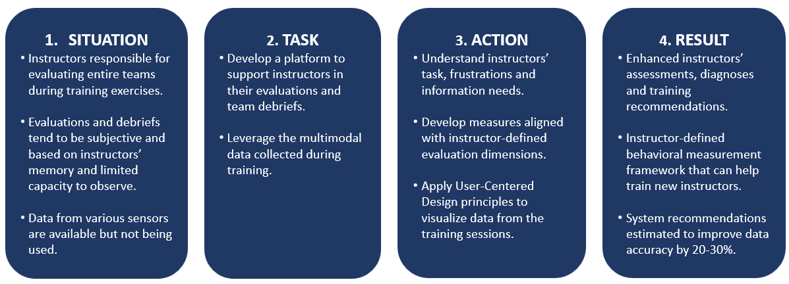
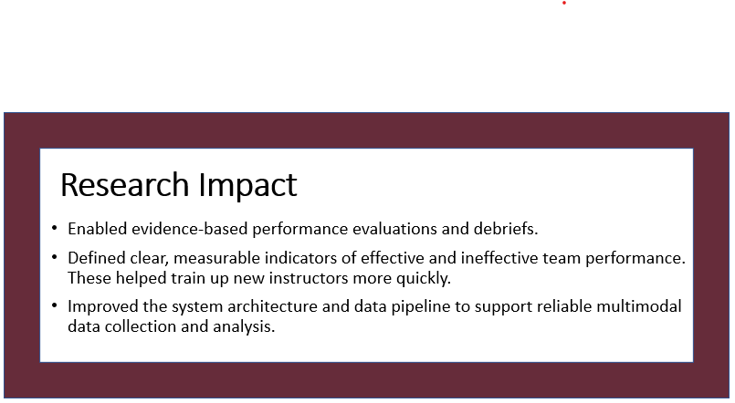
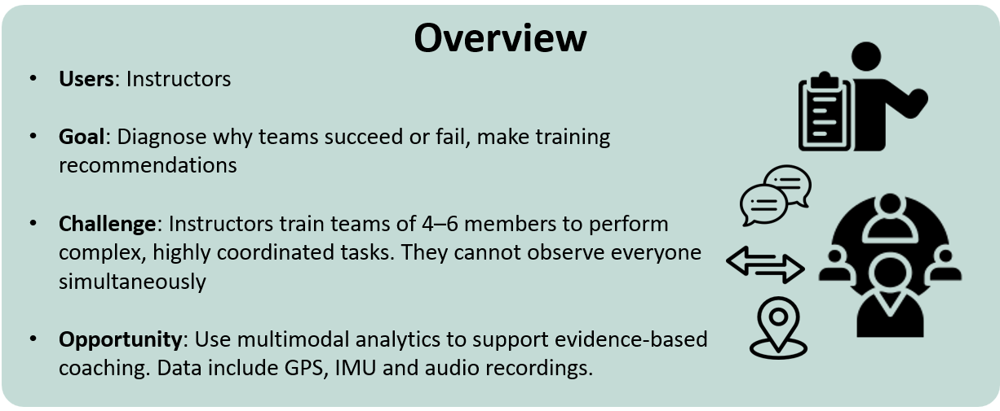
Goal
- Support instructors with objective performance insights.
- Reduce subjectivity in evaluations.
- Improve training and team performance.
Problem
- A single instructor is typically responsible for observing and evaluating an entire team's training session.
- Evaluations are often subjective, inconsistent, and difficult to standardize.
Process
Applied a user-centered design process to ensure the solution was grounded in instructors' actual workflows, information needs, and decision-making processes.
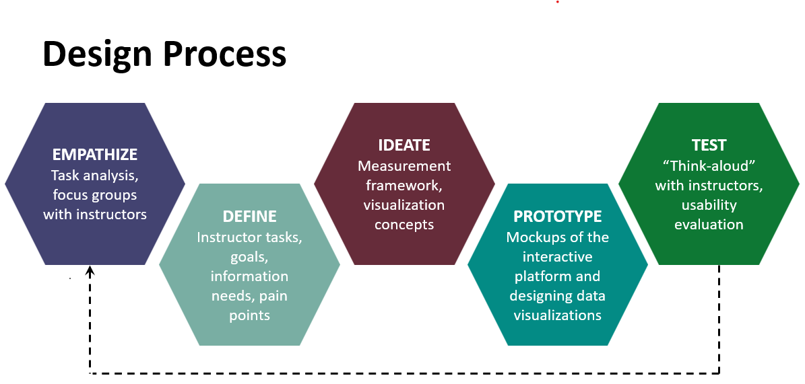
Phase 1: EMPATHIZE — Understanding how instructors decide on evaluations
I conducted task analysis, multiple interviews, and observations to understand the instructor-user's workflows, information needs, and decision-making processes.
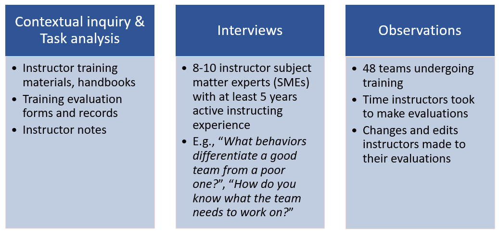
From the thematic analysis, the user persona and journey map were developed.
These artifacts fostered a common understanding of the user throughout the cross-functional team.
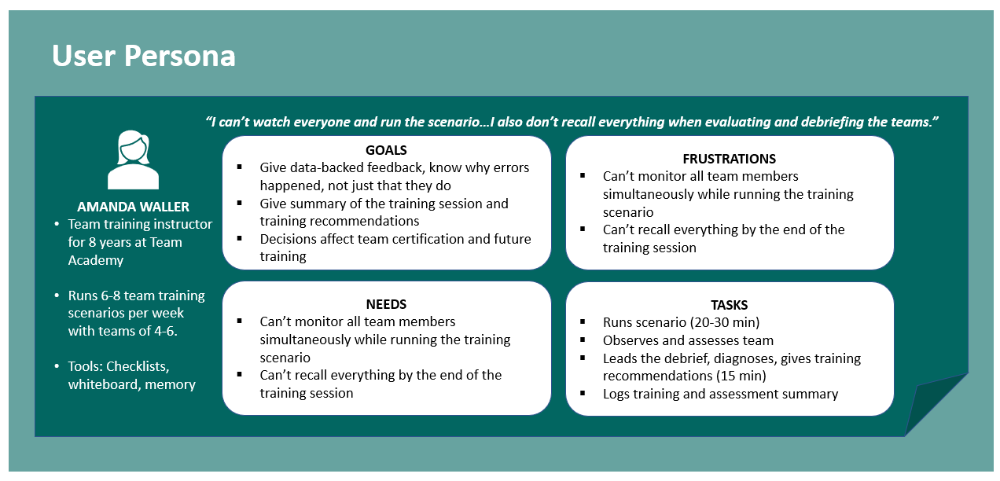
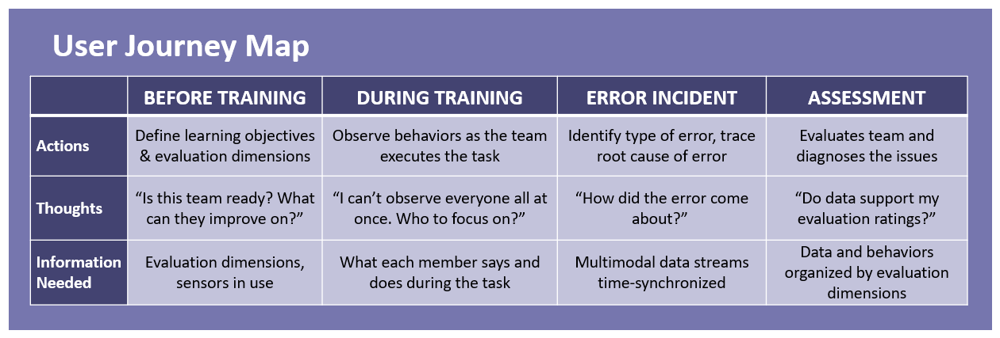
Phase 2: DEFINE — Synthesize Findings and Identify the Main Problems
Problem #1: Instructors Needed Explanations, Not Just Data
Research showed that instructors don't just need data, they also needed to diagnose the causes and explanations of performance issues.
For example, location data can show that someone was not at their duty station at a critical time, but communication data can explain why it happened.
This led to the first key insight.
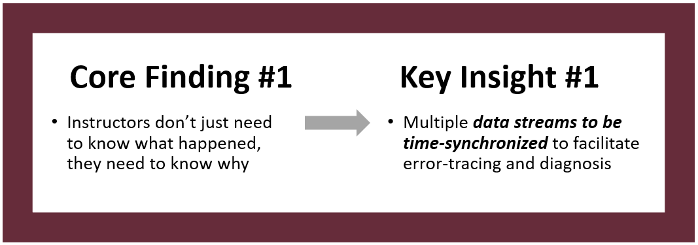
Problem #2: Instructors Can't Use Data From Sensors Directly For Evaluations
Instructors evaluated the teams on certain evaluation dimensions, e.g., "team communication," "coordination."
These dimensions were high-level and cannot be directly observed in the raw data.
This led to the second key insight.
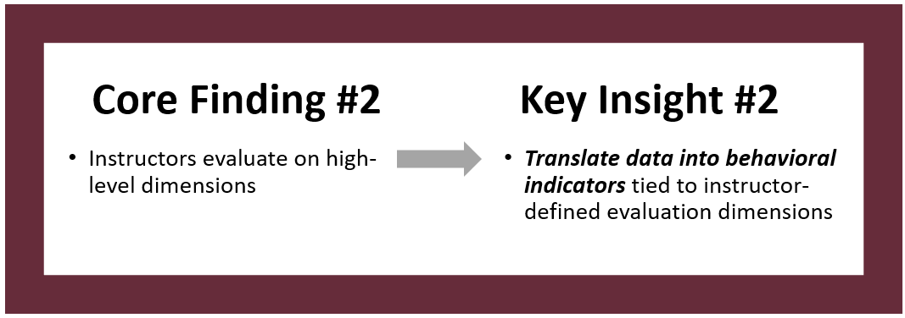
Phase 3: IDEATE — Develop Solutions
#1: Time-synchronizing multiple data streams
Designed a bird's-eye view displaying team members' locations and head orientation throughout the task.
This was accompanied by synchronized communication transcript that provided the context needed to interpret team behaviors.
The display aligned location (from GPS), head orientation (from IMUs), and communication transcripts (from audio recordings) on a common timeline.
This would help instructors to correlate events and identify contributing factors.
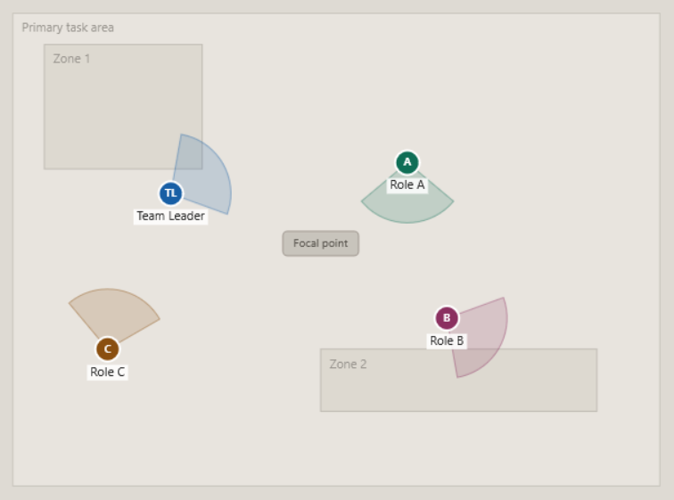
#2: Translating the data into instructor-defined evaluation dimensions
Research identified the behavioral cues instructors used to assess team performance.
These cues were converted into measurable behavioral metrics.
For example, repeated instructions from a team leader indicated ineffective team communication.
The resulting metrics presented the raw sensor data in terms that instructors naturally understood.
Bar graphs enabled instructors to quickly compare each team member's performance.
Behavior timestamps linked directly to playback, allowing instructors to review each event in context.
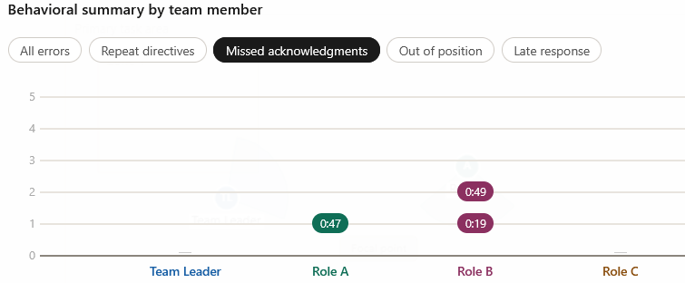
Data Integration and Trust
The platform relied on multiple data sources collected from different sensors and systems.
To support diagnosis, these data streams needed to be accurately synchronized on a common timeline.
Even small timing discrepancies could lead instructors to draw incorrect conclusions about the relationship between behaviors and outcomes.
Working closely with engineers, I identified critical points in the data pipeline where synchronization and integration errors could occur and recommended validation checks to verify data quality before integration.
This work also reinforced an important design principle: automated analysis is only useful when users can understand the evidence behind the system's outputs and have sufficient context to verify those outputs.
Phase 4: PROTOTYPE
An interactive prototype of the decision support platform was developed.
Testers could playback the training session and view where each member was, the direction they were facing, and what was communicated during the session.
Testers could also fast-forward, rewind, or jump to any timepoint within the session.
Playback speed could be adjusted.
There was also a "Behavioral Summary" section where instructors could view when specific behavioral cues were observed.
These cues aligned with what they would typically look out for when evaluating the team on the evaluation dimensions.
Research Reflection
Shared understanding
Research artifacts facilitated shared understanding among the cross-functional product team.
The user persona and journey map provided a common framework for the team to discuss user needs, pain points, and goals.
Measurement framework
The measurement framework aligned data collection and system functionality with user needs.
Research guided visualization concepts and information architecture.
Cross-functional impact
Ongoing collaboration with design and engineering teams showed research value throughout every phase of product development.